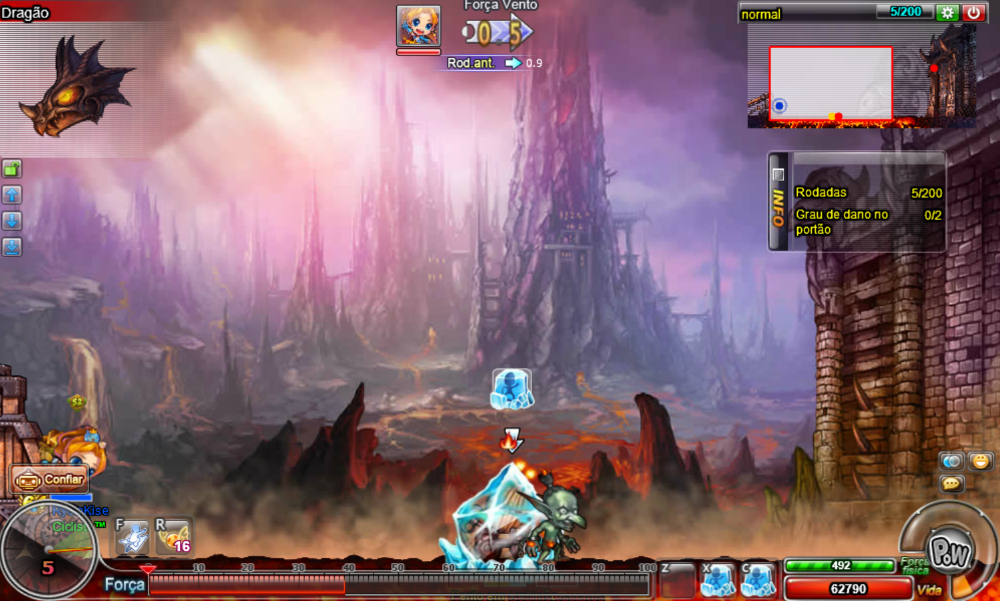
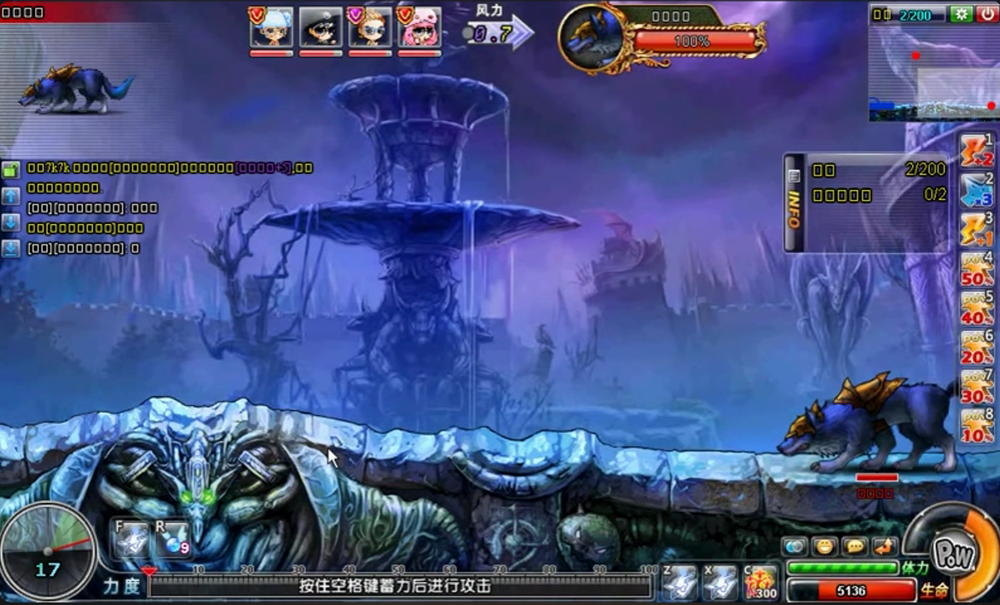
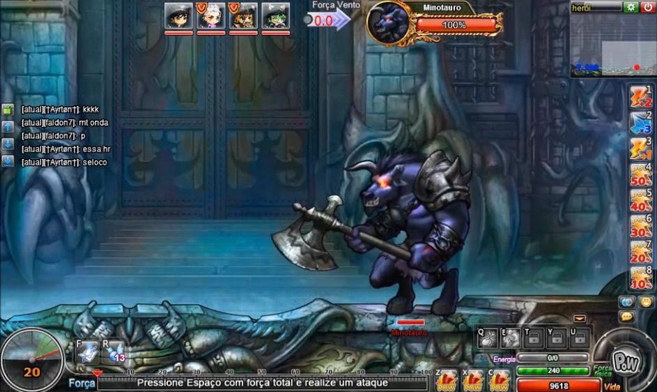

Na instância do castelo sombrio, você e sua equipe entrarão no castelo do rei minotauro, e encontrarão desafios mais difíceis conforme avançam os estágios.
O Castelo Sombrio possue 3 dificuldades: normal, dificíl e heróico.
Aqui, todas as dificuldades possuem o mesmo número de estágios, indo do 1 ao 3.

O estágio 1 do castelo sombrio é o mais complexo de todas as intâncias, aqui o objetivo é fazer com que a bomba chegue até o portão do castelo e exploda, abrindo uma abertura no portão.
Faça com que a bomba atinja o portão 2 ou 3 vezes (dependendo da dificuldade) e você avançará para o próximo estágio.
Em algumas versões do jogo, é possível passar esse estágio sozinho, porém o recomendado é passar com 4 pessoas.
Quando o olho do dragão estiver aberto, priorize utilizar o gelo na bomba;
Após isso, priorize matar o goblim e logo em seguida utilizar o dom na bomba, para evitar que ela exploda por queimação.

No estágio 2 você enfrentará um lobo e uma águia, aqui não têm muitas dificuldades, derrote ambos para avançar ao último estágio.

No estágio 3 você enfrentará o rei minotauro.
Aqui, a princípio o rei minotauro é imune a ataques e invocará almas pelo céu do castelo, destrua todas o mais rápido possível.
Depois de um certo número de rodadas o rei minotauro irá fazer um ataque carregado, absorvendo todas as almas. Caso você tenha destruido todas, ele irá falhar seu ataque e cairá, perdendo sua imunidade. Este momento é a brecha para que você e sua equipe o ataquem.
Caso você não tenha conseguido destruir todas as almas, o rei minotauro carregará seu ataque com sucesso e causará MUITO dano.
Após conseguir derrotar o rei minotauro, parabéns! Você terá concluído a instância Castelo Sombrio.